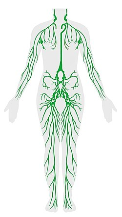

El sistema linfático es una red formada por vasos, ganglios, órganos y tejidos especializados cuya función principal consiste en transportar la linfa desde los tejidos hacia la circulación sanguínea. Además de participar en el mantenimiento del equilibrio de los líquidos corporales, desempeña un papel fundamental en la defensa del organismo mediante la producción, maduración y transporte de células del sistema inmunológico.
Aunque guarda semejanzas con el sistema circulatorio, el sistema linfático no constituye un circuito cerrado. Comienza en pequeños capilares distribuidos por prácticamente todos los tejidos del cuerpo. Estos capilares recogen el exceso de líquido intersticial que no regresa directamente a los capilares sanguíneos. Posteriormente la linfa circula por vasos de mayor tamaño, atraviesa numerosos ganglios linfáticos y finalmente desemboca en el sistema venoso.
La linfa es un líquido transparente o ligeramente amarillento que se origina a partir del líquido intersticial. Contiene agua, proteínas, grasas absorbidas en el intestino, sales minerales y diferentes tipos de glóbulos blancos, especialmente linfocitos. Su composición varía según la región del cuerpo por donde circula y el tejido del cual procede.
Durante su recorrido, la linfa atraviesa los ganglios linfáticos donde es filtrada. En estos órganos se eliminan microorganismos, restos celulares y otras partículas extrañas antes de que el líquido vuelva a incorporarse al torrente sanguíneo.
El sistema linfático está constituido por una extensa red de vasos y diversos órganos especializados que trabajan de manera coordinada para mantener la defensa del organismo.
Los vasos linfáticos forman una red distribuida por casi todo el organismo. Comienzan como diminutos capilares en los tejidos y, a medida que avanzan, se unen formando vasos cada vez de mayor diámetro. En su interior poseen válvulas que impiden el retroceso de la linfa y favorecen su desplazamiento en una sola dirección.
El movimiento de la linfa depende principalmente de la contracción de los músculos, los movimientos respiratorios y las válvulas presentes en los vasos, ya que el sistema linfático no posee una bomba impulsora como el corazón.
Los ganglios linfáticos son pequeñas estructuras con forma de frijol distribuidas a lo largo de los vasos linfáticos. Actúan como filtros biológicos donde la linfa es examinada por células del sistema inmunológico capaces de reconocer y destruir microorganismos, células dañadas y otras partículas extrañas.
Existen cientos de ganglios distribuidos por todo el cuerpo, concentrándose especialmente en el cuello, las axilas, el tórax, el abdomen y la región inguinal.
El bazo es el órgano linfático de mayor tamaño. Se encuentra en la parte superior izquierda del abdomen, debajo del diafragma y detrás del estómago. Participa en la respuesta inmunológica, filtra la sangre, elimina glóbulos rojos envejecidos y contribuye al almacenamiento de plaquetas y linfocitos.
El timo está situado detrás del esternón y alcanza su mayor desarrollo durante la infancia. En este órgano maduran los linfocitos T, células fundamentales para el funcionamiento del sistema inmunológico. Con el paso de los años disminuye progresivamente de tamaño.
Las amígdalas forman parte del tejido linfático localizado alrededor de la faringe. Constituyen una de las primeras barreras defensivas frente a microorganismos que ingresan por la boca y la nariz.
La médula ósea es un tejido localizado en el interior de los huesos donde se originan las células sanguíneas. En ella se producen los linfocitos y otras células que participan en la respuesta inmunitaria.
Cuando la sangre circula por los capilares, parte del plasma atraviesa sus paredes para aportar oxígeno y nutrientes a las células. Una fracción de este líquido no retorna directamente a los capilares sanguíneos y permanece entre los tejidos formando el líquido intersticial.
Los capilares linfáticos recogen este exceso de líquido y lo transforman en linfa. Posteriormente, la linfa atraviesa numerosos ganglios donde es filtrada antes de regresar a la circulación venosa mediante los grandes conductos linfáticos.
Gracias a este proceso se mantiene el equilibrio de líquidos en el organismo y se facilita la vigilancia constante frente a microorganismos potencialmente dañinos.
| Estructura | Función principal |
|---|---|
| Capilares linfáticos | Recoger el exceso de líquido intersticial. |
| Vasos linfáticos | Transportar la linfa hacia los grandes conductos. |
| Ganglios linfáticos | Filtrar la linfa y activar la respuesta inmunológica. |
| Bazo | Filtrar la sangre y colaborar en la inmunidad. |
| Timo | Maduración de los linfocitos T. |
| Amígdalas | Protección frente a microorganismos que ingresan por la boca y la nariz. |
| Médula ósea | Producción de células sanguíneas y linfocitos. |
El correcto funcionamiento del sistema linfático resulta indispensable para mantener el equilibrio del organismo. Si el drenaje linfático se altera, puede producirse una acumulación de líquido en los tejidos denominada edema o linfedema. Asimismo, numerosas enfermedades infecciosas, inflamatorias y algunos tipos de cáncer pueden afectar a los ganglios linfáticos y a otros órganos del sistema.
Una alimentación equilibrada, la actividad física regular, la hidratación adecuada y el tratamiento oportuno de las infecciones contribuyen al buen funcionamiento del sistema linfático.
El sistema linfático constituye una parte esencial del organismo. Además de mantener el equilibrio de los líquidos corporales, participa activamente en la defensa frente a bacterias, virus, hongos y otros agentes infecciosos. Su funcionamiento coordinado con el sistema circulatorio y el sistema inmunológico permite conservar la estabilidad del medio interno y proteger al cuerpo de numerosas enfermedades.
Los avances en la investigación biomédica han permitido comprender mejor el papel del sistema linfático en procesos como la inflamación, la respuesta inmunitaria, el transporte de grasas y la propagación de algunas enfermedades. Por ello, continúa siendo un área de gran interés para la medicina y las ciencias biológicas.